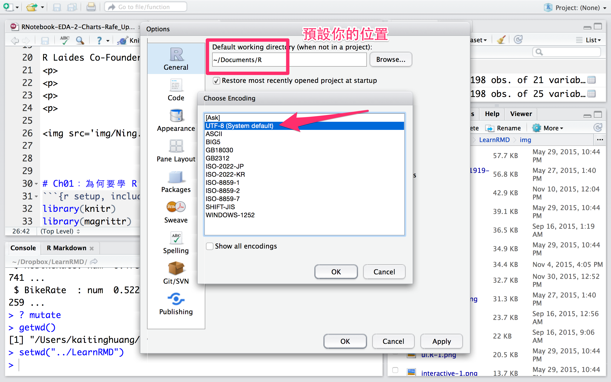
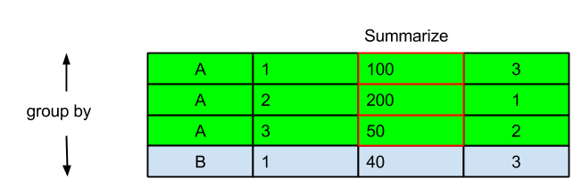

- Aha Lin
- Wush Wu
- Johnson Hsieh
- Rafe Liu
- Ben Chen
- Ning Chen
教材貢獻者
Who is Johnson?

Ch01：為何要學 R 語言？
R 是專門為資料分析而設計的程式語言

R 可以執行大多數的統計計算、機器學習、資料採礦方法
免費、開源、豐沛的社群資源

很容易擴充和客製化
很容易和其他工具做整合
R 可以輸出高品質的視覺化

課程目標
- 建立 R 的使用環境
- 熟悉 R 語言基礎操作
- 了解 R 語言的物件的結構
- 學習 R 語言的資料整理
- 從無到有，完成探索性資料分析
Ch02：建立 R 的使用環境
傢俬準備好
環境安裝
- 主程式：R（R-3.2.4 以上版本）
- 編輯界面：RStudio IDE（0.99.473 以上版本）
- 疑難排解指南
RStudio 界面說明
- 程式碼編輯區
- 命令列區
- 環境資訊區
- 檔案系統區
熟悉 RStudio 的 命令列 界面
程式的輸入、輸出、中斷
- 左下角的當符號
>表示可以輸入指令 - 輸入
1 + 1後按下 Enter，檢查螢幕輸出 - 輸入
1 +後按下 Enter，檢查螢幕輸出
最左下角的開頭變成+表示尚未輸入完成，應繼續輸入 - 按下 ESC，會中斷執行中的程式 (左下角回復成
>開頭)
熟悉 RStudio 的 程式碼編輯 界面
停留時間最多的區域
- New File -> R Script -> Untiled1.R
- 在程式碼編輯區中輸入
1 + 1後按下 Control + Enter，檢查 命令列區 - 在程式碼編輯區中輸入
1 +後按下 Control + Enter，檢查 命令列區 - 在命令列區按下 ESC 中斷程式
預設你的位置&編碼

調整字型大小

Ch03 今天學完你一定會畫簡單Ubike的圖
讀取表格檔案
- 下載範例資料https://raw.githubusercontent.com/dspim/R-for-beginner/gh-pages/UbikeFeb.csv
- 利用
read.csv讀取csv檔 (一種以逗點分隔欄位的資料格式)
url <- "https://raw.githubusercontent.com/dspim/R-for-beginner/gh-pages/UbikeFeb.csv" download.file(url, destfile = "UbikeFeb.csv", method = "curl") # 把檔案另存成UbikeFeb.csv
dat <- read.csv("UbikeFeb.csv", fileEncoding = "big5")
讀取表格檔案
讀取自己電腦裡的csv檔
# 方法1. 透過介面選擇檔案所在路徑
path <- file.choose()
dat <- read.csv(path)
# 方法2. 自行輸入檔案所在路徑
path <- "/LearnR/UbikeFeb.csv"
dat <- read.csv(path)
# 方法3. 自行輸入檔案相對路徑
dat <- read.csv("UbikeFeb.csv")
看看有甚資料
head會列出"頭" 6 筆資料。
date hour sno sna sarea temp rainfall 1 2015-02-01 0 1 捷運市政府站(3號出口) 信義區 13.73755 0 2 2015-02-01 0 2 捷運國父紀念館站(2號出口) 大安區 13.80401 0 3 2015-02-01 0 3 台北市政府 信義區 13.82918 0 4 2015-02-01 0 5 興雅國中 信義區 13.83382 0 5 2015-02-01 0 7 信義廣場(台北101) 信義區 13.92348 0 6 2015-02-01 0 8 世貿三館 信義區 13.88992 0 humidity tot avg.sbi 1 87.49700 180 4.153 2 86.81732 48 1.322 3 87.25139 40 0.407 4 87.56932 60 1.220 5 87.48805 80 2.949 6 87.21782 60 1.983
你也可以使用
-Tail()
-summary()
-str()
有哪些Variables
| Column Name | 中文 | Column Name | 中文 |
|---|---|---|---|
| date | 日期 | hour | 小時 |
| sno | 場站代號 | sna | 場站名稱 |
| sarea | 行政區 | temp | 溫度 |
| rainfall | 雨量 | humidity | 濕度 |
| tot | 場站停車格 | avg.sbi | 平均車輛數 |
今天結束你能夠自己整理，每小時各場站有車狀況
sbihourly = aggregate(dat$avg.sbi,by=list(dat$hour),FUN = "mean")
plot(sbihourly,main="每小時場站車輛數目")
筆記
- 運算內容以() 包括起來
- ，分開Arguments
- 請注意List
- 請注意控制圖標題用"每小時場站車輛數目" ，先後有""
每小時場站有車狀況
install.packages("ggplot2")
library(ggplot2)
sbisareahourly = aggregate(list(avg.sbi=dat$avg.sbi),by=list(hour =dat$hour,sarea= dat$sarea),FUN = "mean")
ggplot(sbisareahourly, aes(x=hour, y=avg.sbi)) + geom_point() + facet_wrap(~sarea)
筆記
- 安裝ggplot2套件
- ，分開Arguments
- 請注意List
- 請注意控制圖標題用"每小時場站車輛數目" ，先後有""
Ch04：基礎教學 - 敘述句與數列
敘述句
1
[1] 1
2
[1] 2
1; 2
[1] 1
[1] 2
筆記
- 灰底的區塊為程式碼 (輸入)，[1] 為運算結果 (輸出)
- 敘述句以斷行 (Enter) 或分號 ( ; ) 作結尾
- 未完成的敘述句，命令列開頭會變成
+ - 可以用 Esc 中斷敘述句
- R 會把單引號
'apple'或雙引號"book"所包覆的敘述當成字串
敘述句2
# 基礎運算 1 + 2 + 3
[1] 6
1 + 2 + 3
[1] 6
x <- 10 y <- 4 (x + y) / 2 # 簡單的公式運算
[1] 7
筆記
- 基本數學運算符號 (
+,-,*,/, …) - 空白 (space) 不影響程式執行
- 箭號 (
<-) 表示賦值，把箭號右邊的結果指向到R物件 - 井號 (#) 表示註解，使得該行不執行運算
- 在RStudio中，想要一次註解多行可用 ctrl + shift + c
- 在命令列中按 ctrl + l 可以清除當前畫面
最基礎的物件：數值型向量 (數列)
# basic expression of integer vector c(1, 2, 3, 4)
[1] 1 2 3 4
# simple expression 1:4
[1] 1 2 3 4
4:1
[1] 4 3 2 1
筆記
- 以
c(...)表示 (c 取自combine之意), 元素以逗號分隔。 - 連續整數向量可以利用
:(冒號) 簡記，譬如數列 (1, 2, 3, 4) 在 R 語言中可利用1:4簡記 - 也可以使用
4:1的簡記方式來產生 (4, 3, 2, 1) 的向量
如何生成有序的數值向量
seq(1, 4)
[1] 1 2 3 4
seq(1, 9, by = 2) # 間隔為2
[1] 1 3 5 7 9
seq(1, 9, length.out = 5) # 分割長度為5
[1] 1 3 5 7 9
筆記
- 除了冒號簡記法外，可以透過
seq函數生成有規則的數值向量(序列) - 在
seq()函數中按 tab 鍵觀察有哪些參數可以使用 by表示數列間隔，預設為1length.out表示數列長度
小挑戰
- 利用簡記法列出 1 ~ 100的數列
- 利用
seq函數列出偶數數列: 2, 4, 6, 8, 10 - 觀察
seq(1, 10, length.out=5)的輸出結果
參考解答
1:100
[1] 1 2 3 4 5 6 7 8 9 10 11 12 13 14 15 16 17 [18] 18 19 20 21 22 23 24 25 26 27 28 29 30 31 32 33 34 [35] 35 36 37 38 39 40 41 42 43 44 45 46 47 48 49 50 51 [52] 52 53 54 55 56 57 58 59 60 61 62 63 64 65 66 67 68 [69] 69 70 71 72 73 74 75 76 77 78 79 80 81 82 83 84 85 [86] 86 87 88 89 90 91 92 93 94 95 96 97 98 99 100
seq(2, 10, by = 2)
[1] 2 4 6 8 10
seq(2, 10, length.out = 5)
[1] 2 4 6 8 10
seq(1, 10, length.out=5)
[1] 1.00 3.25 5.50 7.75 10.00
Ch05：基礎教學 - 數列的運算
數列的運算
R的數列運算滿足 recycling properties
c(1, 2, 3) * c(2, 2, 2)
[1] 2 4 6
# shorter arguments are recycled 1:3 * 2
[1] 2 4 6
c(0.5, 1.5, 2.5, 3.5) * c(2, 1)
[1] 1.0 1.5 5.0 3.5
小挑戰
向量的四則運算，請計算以下五位女藝人的BMI
Hint: BMI = 體重 / (身高/100)^2
height <- c(174, 158, 160, 168, 173) weight <- c(52, 39, 42, 46, 48)
向量的取值
- 在
[ ](中括號) 中輸入元素的位置進行取值 - 使負號 (
-) 移除給定位置元素 (反向選取)
x <- c(174, 158, 160, 168, 173) x[1] # 選取第1個位置的元素
[1] 174
x[c(1, 3)] # 選取第1, 3個位置的元素
[1] 174 160
x[c(2, 3, 1)] # 依序取值
[1] 158 160 174
# 在[ ]中使用負號 (-) 做反向選取 x[-1]
[1] 158 160 168 173
x[-c(1, 3, 4)]
[1] 158 173
向量的取值2
給定條件進行取值
- 比較運算子(
>,<,>=,<=,==,!=) - 邏輯運算子 (
&,|)
x > 160
[1] TRUE FALSE FALSE TRUE TRUE
# 使用比較運算子 加上 `which` 函數進行取值 index <- which(x > 160) index
[1] 1 4 5
x[index]
[1] 174 168 173
# 指令壓縮，將指令寫在 [ ] 中，以達到縮短程式碼的功效 x[which(x > 160)]
[1] 174 168 173
# 配合邏輯算子進行多條件的取值 x[which(x > 160 & x < 175)]
[1] 174 168 173
# 可以省略 which x[x > 160 & x < 175]
[1] 174 168 173
向量的取代
- 利用
[ ](中括號) 與<-(箭號) 進行取代與新增元素
x <- c(174, 158, 160, 168, 173) # 取代特定位置的元素 x[2] <- 158.5 # 取代x物件的第二個元素 x
[1] 174.0 158.5 160.0 168.0 173.0
x[c(1, 5)] <- 175 x
[1] 175.0 158.5 160.0 168.0 175.0
# 也可以用條件篩選做取代 x[x > 160] <- 170 # 取代大於160的值為170 x
[1] 170.0 158.5 160.0 170.0 170.0
向量新增
可用 [ ] (中括號) 與 <- (箭號) 進行新增元素
- NA 為系統保留字，表示Not Available / Missing Values
x <- c(174, 158, 160, 168, 173) # 在 [ ] 中新增元素 x[6] <- 168 x
[1] 174 158 160 168 173 168
x[8] <- 147 x # 未指定的元素值預設為NA
[1] 174 158 160 168 173 168 NA 147
length(x) # 查看向量物件的長度
[1] 8
x[length(x) + 1] <- 166 # 接續增加新元素
Character
- 最廣泛的資料結構，可用於處理文字相關的工作，如：設定圖片的標題
- 輸入的時候利用
"或'來包覆要輸入的文字
常用的Character處理函數
字串的剪接：`paste
x <- "abc";y <- "dbbbe" paste(x, y, sep=",")
[1] "abc,dbbbe"
字串的切割：strsplit
strsplit(x, "b")
[[1]] [1] "a" "c"
截取子字串：substring
name1<-"郭雪芙" substring(name1, 1, 1)
[1] "郭"
小挑戰 取出金城武的姓
解答
name2<-"金城武" substring(name2, 1, 2)
[1] "金城"
Ch06：查詢說明檔
在 R 中查詢說明文件
各種自救措施
help.start()
ab # 輸入`ab`後 按下tab
?abs # 等同於 help(abs)
??abs
vignette()
vignette("Introduction", "Matrix")
筆記
- help.start: 說明檔首頁
- 自動完成 (tab鍵)：列出所有
ab開頭的函數 - ? (一個問號)：查詢特定函數的說明檔
- ?? (兩個問號)：查詢包含特定關鍵字的說明檔
- apropos : 查詢包含特定關鍵字的函數
- example : 執行特定函數的使用範例
- vignette : 查詢R環境中各種介紹文件
Ch07：統計上資料測量的尺度
資料型態
- 名目資料(nomial)
- 順序資料(ordinal)
- 區間資料(interval)
- 比例資料(ratio)
名目資料
數值只用於記號，"值"毫無意義的數據
- 性別
- 國家/班級
| 男 | 女 |
|---|---|
| 0 | 1 |
| 男 | 女 |
|---|---|
| 1 | 2 |
順序資料
數值有順序關係，但是差距沒有意義
- 名次
- 排序表
第一名的成績一定比第二名好,但不代表第一名比第二名好兩倍
區間資料
有差距的概念，沒有倍數的概念。
數值有1的概念，沒有0的概念。可加減。
- 溫度
- 時間
比值資料
同時有差距和倍數的概念。可加減乘除。
- 使用者人數
- 營收
Ch06: R 的資料形態分類
分類
| 資料衡量尺度 | 變數形態 | 特性 | R | |
|---|---|---|---|---|
| 1 | 名目資料 | 質化 | 類別 | Factor |
| 2 | 順序資料 | 質化 | 優先順序 | Factor |
| 3 | 區間資料 | 量化 | 大小距離 | Vector |
| 4 | 比例資料 | 量化 | 比值 | Vector |
量性 Integer and Numeric
+
1 + 2
[1] 3
-
1 - 2
[1] -1
*
1 * 2
[1] 2
/
1L / 2L
[1] 0.5
判斷 Logical
產生自比較，或是使用T、TRUE、F或FALSE輸入
x <- 1 x < 2
[1] TRUE
x <= 1
[1] TRUE
向量有同質性 Vector
Character > Numeric > Integer > Logical
x <- c(1, 2.0, "3") x
[1] "1" "2" "3"
- 改一個，全部就都變了
Factor(常用於處理質性變數)
如何處理名目變數?
x <- c("F","M","F","F")
x
[1] "F" "M" "F" "F"
x <- factor(c("F","M","F","F"), levels=c("F","M"))
x
[1] F M F F Levels: F M
x <- factor(c("F","M","F","F"), levels=c("F"))
levels(x)
[1] "F"
as.integer(x)
[1] 1 NA 1 1
如何處理順序資料?
#農業社會 男尊女卑
Argri <- factor(c("F","M","F","F"),order=TRUE,levels=c("F","M"))
#阿美族 女尊男卑
Amis <- factor(c("F","M","F","F"),order=FALSE,levels=c("F","M"))
#應該要用
Amis <- factor(c("F","M","F","F"),order=TRUE,levels=c("M","F"))
換個例子
#舉一個認真的例子 - 班上一號到六號分別拿到A,B,C的級別
rank=factor(c("C","A","B","B","C","C"),order=TRUE,level=c("C","B","A"))
rank
[1] C A B B C C Levels: C < B < A
rank[1]<rank[2]
[1] TRUE
Recape
| 資料衡量尺度 | 變數形態 | 特性 | R | |
|---|---|---|---|---|
| 1 | 名目資料 | 質化 | 類別 | Factor |
| 2 | 順序資料 | 質化 | 優先順序 | Factor |
| 3 | 區間資料 | 量化 | 大小距離 | Vector |
| 4 | 比例資料 | 量化 | 比值 | Vector |
異質性資料 List
x<-list(1L,2,"3")
*連函數都吃
x<-list(1L,2,"3",mean)
c(174, 52, "林志玲") # 數值被轉換成字串
[1] "174" "52" "林志玲"
# 所有元素都被轉換成字串
c("林志玲", 174, 52, TRUE)
[1] "林志玲" "174" "52" "TRUE"
Ch08：資料表
資料表 data.frame
data.frame是資料分析時最基本的物件R提供將外部資料轉成data.frame的功能- 透過
data.frame可以進行以下功能：- 資料的整理
- 圖形的繪製
- 模型的配適與預測
我們來看看Ubike
head(dat) # 列出前幾筆資料, 預設6筆
date hour sno sna sarea temp rainfall 1 2015-02-01 0 1 捷運市政府站(3號出口) 信義區 13.73755 0 2 2015-02-01 0 2 捷運國父紀念館站(2號出口) 大安區 13.80401 0 3 2015-02-01 0 3 台北市政府 信義區 13.82918 0 4 2015-02-01 0 5 興雅國中 信義區 13.83382 0 5 2015-02-01 0 7 信義廣場(台北101) 信義區 13.92348 0 6 2015-02-01 0 8 世貿三館 信義區 13.88992 0 humidity tot avg.sbi 1 87.49700 180 4.153 2 86.81732 48 1.322 3 87.25139 40 0.407 4 87.56932 60 1.220 5 87.48805 80 2.949 6 87.21782 60 1.983
dim(dat) # 列出資料表的 rows and columns
[1] 135859 10
表格的取值 - 座標
- 類似於向量取值，在中括號
[i, j]中進行取值 - 逗號的前後分別表示資料表的 row and column
dat[2, 3]
[1] 2
dat[1:6, 1:3]
date hour sno 1 2015-02-01 0 1 2 2015-02-01 0 2 3 2015-02-01 0 3 4 2015-02-01 0 5 5 2015-02-01 0 7 6 2015-02-01 0 8
表格的取值 - 列
欲選取第i筆觀察資料時，使用 [i, ] 在column欄位留白
dat[2, ]
date hour sno sna sarea temp rainfall 2 2015-02-01 0 2 捷運國父紀念館站(2號出口) 大安區 13.80401 0 humidity tot avg.sbi 2 86.81732 48 1.322
dat[c(1, 51, 101),]
date hour sno sna sarea temp rainfall
1 2015-02-01 0 1 捷運市政府站(3號出口) 信義區 13.73755 0
51 2015-02-01 0 67 捷運臺大醫院(4號出口) 中正區 13.90910 0
101 2015-02-01 0 137 國防大學 北投區 14.89289 0
humidity tot avg.sbi
1 87.49700 180 4.153
51 87.49643 48 5.424
101 80.97961 46 12.508
表格的取值 - 欄
欲選取整欄資料時，有三種常用方法
dat[,1] # 欄位名稱未知 dat$sarea # 已知欄位名稱 dat[["sarea"]] # 已知欄位名稱
表格的取值 - 篩選
利用條件式做篩選
head(dat[dat$hour == "0"&dat$sarea == "信義區",])
date hour sno sna sarea temp rainfall 1 2015-02-01 0 1 捷運市政府站(3號出口) 信義區 13.73755 0 3 2015-02-01 0 3 台北市政府 信義區 13.82918 0 4 2015-02-01 0 5 興雅國中 信義區 13.83382 0 5 2015-02-01 0 7 信義廣場(台北101) 信義區 13.92348 0 6 2015-02-01 0 8 世貿三館 信義區 13.88992 0 7 2015-02-01 0 11 三張犁 信義區 13.90855 0 humidity tot avg.sbi 1 87.49700 180 4.153 3 87.25139 40 0.407 4 87.56932 60 1.220 5 87.48805 80 2.949 6 87.21782 60 1.983 7 86.85058 66 18.644
資料型態的轉換2
- 利用以下函數自行轉換向量型態：
as.character,as.numeric,as.logical。
as.numeric("2")
[1] 2
as.integer("a")
Warning: 強制變更過程中產生了 NA
[1] NA
x <- c(1, 2, 3, 2, 3, 2, 1) as.character(x) # 字串
[1] "1" "2" "3" "2" "3" "2" "1"
factor(x) # ??用剛才dataframe作
[1] 1 2 3 2 3 2 1 Levels: 1 2 3
資料型態的轉換3 直接轉換
x <- c("1", "2", "3", "2", "a")
as.numeric(x)
Warning: 強制變更過程中產生了 NA
[1] 1 2 3 2 NA
NA代表Not available，代表著missing value
# 字串轉數字
a1 <- c("89", "91", "102")
as.numeric(a1)
[1] 89 91 102
# 布林轉數字 a2 <- c(TRUE, TRUE, FALSE) as.numeric(a2)
[1] 1 1 0
# 數字轉布林 a3 <- c(-2, -1, 0, 1, 2) # 只有0會被轉成FALSE as.logical(a3)
[1] TRUE TRUE FALSE TRUE TRUE
# 數字轉字串 as.character(a3)
[1] "-2" "-1" "0" "1" "2"
小挑戰
請將dat$Date 從factor轉成 時間格式
PS.請用str(dat$Date)做確認
Ch09：讀取資料 - Summary
summary 指令
- 根據資料形態的不同，函數的輸出結果也會不同
Factor
factor_example=factor(c("三年甲班", "三年乙班", "三年甲班"))
summary(factor_example)
三年甲班 三年乙班
2 1
Character
character_example=c("a","b","c")
summary(character_example)
Length Class Mode
3 character character
List
list_example <- list(1L, 2.0, "3") summary(list_example)
Length Class Mode [1,] 1 -none- numeric [2,] 1 -none- numeric [3,] 1 -none- character
CH10:淺談路徑設定
getwd查詢目前所在的資料夾路徑 (絕對路徑)setwd設定所在的資料夾路徑
(Session -> Set Working Directory -> Choose Directory)- 檔案 (檔案路徑 file directory) vs. 資料夾 (工作路徑 working directory)
getwd()
[1] "/Users/johnson/Documents/DSP/Training/CHT2016/RBasic-gh-pages"
#改到你要的路徑 # setwd() #選取你要的檔案
複習-檔案讀取
讀取自己電腦裡的csv檔
# 方法1. 透過介面選擇檔案所在路徑
path <- file.choose()
dat <- read.csv(path)
# 方法2. 自行輸入檔案所在路徑
path <- "/LearnR/UbikeFebv1.csv"
dat <- read.csv(path)
# 方法3. 自行輸入檔案相對路徑
dat <- read.csv("UbikeFebv1.csv")
輸出表格檔案
利用write.csv將data.frame格式的R物件另存成csv檔
write.csv(dat, "test.csv", row.names=FALSE, quote=FALSE) # 參數 row.names 控制列id是否輸出 # 參數 quote 控制字串是否加上雙引號
Ch11：檔案讀取 - 排解疑難
常見的讀取錯誤1
路徑錯誤
path <- "wrong_file_path" dat <- read.csv(file = path)
Error in file(file, "rt") : 無法開啟連結 此外: Warning message: In file(file, "rt") : 無法開啟檔案 'wrong_file_path' ：No such file or directory
- 絕對路徑 -> 確認檔案是否存在
- 相對路徑 -> 利用
getwd了解R 當下的路徑位置
常見的讀取錯誤2
格式錯誤
path <- "../UbikeFeb.csv" dat <- read.csv(file = path, header = TRUE, sep = "1")
Error in read.table(file = file, header = header, sep = sep, quote = quote, : more columns than column names
- 利用其他編輯器確認分隔符號
- 確認每列的資料的欄位是正確的
- 必要時，請用其他文件編輯器校正欲讀取的檔案
常見的讀取錯誤3
編碼錯誤
# url <- "http://johnsonhsieh.github.io/dsp-introR/data/dsp-gift-2013-big5/%E8%B2%B7%E8%B3%A3st_A_10109_10109.csv"
dat <- read.csv(url)
Error in make.names(col.names, unique = TRUE) : 無效的多位元組字串於m
- 查詢檔案的編碼
- 常見的中文編碼有UTF-8和BIG-5
# 利用`fileEncoding`參數選擇檔案編碼 - big5 / utf8 # dat2 <- read.csv(url, fileEncoding = "big5")
Ch12：存取資料庫
存取資料庫： SQLite
# install.packages("RSQLite")
library(RSQLite)
Loading required package: DBI
db.path <- "dat.db"
drv <- dbDriver("SQLite")
db <- dbConnect(drv, db.path)
dbWriteTable(db, "dat", head(dat))
dbListTables(db)
dbReadTable(db, "dat")
dbDisconnect(db)
未來的學習清單
各式資料庫的連接
- SQL Database:
RMySQL,RPostgreSQL,ROracle,RJDBC,RODBC - No SQL Database:
rmongodb,rredis - 讀取XML和網頁資料
XML套件和XPath
- 讀取json資料
RJSONIO套件
Ch13：指令壓縮與 Pipeline
指令的壓縮
- 請大家學習「被壓縮的程式碼」該如何解讀
- 掌握運算符號的運算順序
dat[dat[["sno"]] == 1 & dat[["date"]] == "2015-02-01",] x1 <- dat[["sno"]] == 1 x2 <- dat[["date"]] == "2015-02-01" x3 <- x1 & x2 x4 <- dat[x3,]
2014 年最有影響的套件之一：magrittr
- 壓縮的程式碼不好讀
- 展開的程式碼會產生很多暫存變數
- 套件
magrittr部份解決了這個問題 - 請參考Johnson於DSHC meetup的套件介紹
Pipes 算子 %>%
- 想像一下程式的寫作與閱讀邏輯
%>%會將算子左邊的物件 (object) 傳到右邊的函數 (function) 中第一個argument
ans1 <- dat[["sno"]]
ans1.1 <- unique(ans1)
unique(dat[["sno"]])
# install.packages("magrittr")
library(magrittr)
dat[["sno"]] %>%
unique
Pipes %>% 算子 (續)
%>%會將算子左邊的物件 (object) 傳到右邊的函數 (function) 中第一個argument.點號適合用在欲傳入變數不是在傳入函數的第一個位置時使用- 在RStudio中使用熱鍵 ctrl + shift + m 可呼叫
%>% - use x %>% f, rather than f(x)
- or use x %>% f(y, z), rather than f(x, y, z)
- or y %>% f(x, ., z), rather than f(x, y, z)
tri_area <- function(a, h=5) a*h/2 a <- 10 tri_area(a) a %>% tri_area # 省略括號 a %>% tri_area(h=5) # 保留括號 a %>% tri_area(., h=5) # 以 `.` 來表示欲傳入的變數
Ch14：資料表的進階控制
2014 年最有影響的套件之一：dplyr
- 讓R 使用者可以用更有彈性的方式來處理資料
- 針對
data.frame做設計（名稱中的d） - 設計理念
- 導入資料整理最重要的動作（非常類似SQL）
- 快
- 支援異質資料源（
data.frame或資料庫中的表格）
學習dplyr的官方方式：vignette
vignette(all = TRUE, package = "dplyr")
vignette("introduction", package = "dplyr")
- 更詳細的dplyr介紹可以閱讀dplyr的小論文
- R 的開發者會針對一個主題撰寫小論文做介紹
dplyr簡介
filter對列做篩選select對欄做篩選mutate更改欄或新增欄arrange排列- **
group_by+summarise分類

- 出處：資料科學愛好者年會資料分析上手課程：ETL1
- 請參考Paul於DSHC meetup的套件介紹
Ch15：資料的探索
挑戰：學習sd的用法
- 透過
?sd嘗試自學標準差的用法 - 選取
sno為1和date為"2015-02-03"的資料 - 計算
捷運市政府站(3號出口)在"2015-02-03"的降雨量(rainfall)的標準差
x1 <- dat[["sno"]] == 1 x2 <- dat[["date"]] == "2015-02-03" dat[x1 & x2, "rainfall"]
[1] 0.835 0.749 0.751 0.945 1.392 2.048 2.761 3.342 3.680 3.800 3.825 [12] 3.865 3.947 4.031 4.083 4.127 4.213 4.362 4.538 4.690 4.808 4.933 [23] 5.105 5.321
sd(dat[x1 & x2, "rainfall"])
[1] 1.484899
挑戰：學習sd的用法
- 練習使用dplyr & pipes
library(dplyr)
sd(select(
filter(ubike, sno == 1, date == "2015-02-03"),
rainfall)[["rainfall"]])
filter(ubike, sno == 1, date == "2015-02-03") %>%
select(rainfall) %>%
extract2("rainfall") %>%
sd
各行政區的站點數： group_by

每日的平均雨量
group_by(dat, date) %>% summarise(avg_rainfall = mean(rainfall))
各行政區的站點數： group_by
各場站區域的站點數
group_by(dat, sarea) %>% summarise(count_sno = length(unique(sno))) %>% arrange(count_sno)
各場站區域的站點代號清單
group_by(dat, sarea) %>% summarise(list_sarea = paste(unique(sno), collapse = ","))
小挑戰
探索一個質化變數，利用table列出所有的sna (場站名稱)出現的次數
探索變數間的關係
ftable：質化 v.s. 質化bar chart：質化 v.s. 量化scatter plot： 量化 v.s. 量化
探索質化變數與質化變數的關係
?ftable example(ftable)
ftable> ## Start with a contingency table.
ftable> ftable(Titanic, row.vars = 1:3)
Survived No Yes
Class Sex Age
1st Male Child 0 5
Adult 118 57
Female Child 0 1
Adult 4 140
小挑戰：
- 選取場站區域為
信義區 - 選取欄
avg.sbi (平均車輛數)與rainfall (累計雨量) - 利用布林運算式計算"
rainfall"是否超過0.02- 命名為
is.rain (是否下雨)
- 命名為
- 選取欄
hour (時間) - 比較
hour (時間)和is.rain (是否下雨)的交互關係
小挑戰（參考答案）
x1 <- dat[["sarea"]] == "信義區" x2 <- dat[x1, "avg.sbi"] x3 <- dat[x1, "rainfall"] x4 <- x3 > 0.02 x5 <- dat[x1, "hour"] ftable(x5, x4) x1 <- filter(dat, sarea == "信義區") x2 <- mutate(x1, is.rain = rainfall > 0.02) ftable(x2[["hour"]], x2[["is.rain"]]) tbl <- filter(dat, sarea == "信義區") %>% mutate(is.rain = rainfall > 0.02) ftable(tbl[["hour"]], tbl[["is.rain"]])
Ch14：資料視覺化
Data Visualization
- 清晰有效地傳達與溝通訊息
- 教學、研究、宣傳
- 美學、功能兼顧
- 統計圖形、訊息可視化
- 參考Johnson於DSHC meetp的介紹
ggplot
- 當前最多人使用的視覺化R套件
- 取自 “The Grammar of Graphics” (Leland Wilkinson, 2005)
- 由Hadley Wickham於2005年發表 (Chief Scientist in RStudio)
- 設計理念
- 採用圖層系統
- 用抽象的概念來控制圖形，避免細節繁瑣
- 圖形美觀
ggplot2的基本架構
- 資料 (data) 和映射 (mapping)
- 幾何對象 (geometric)
- 座標尺度 (scale)
- 統計轉換 (statistics)
- 座標系統 (coordinante)
- 圖層 (layer)
- 刻面 (facet)
- 主題 (theme)
ggplot2的基本架構

基本語法
ggplot(data=..., aes(x=..., y=...)) + geom_xxx(...) + stat_xxx(...) + facet_xxx(...) + ...
ggplot描述 data 從哪來aes描述圖上的元素跟 data 之類的對應關係geom_xxx描述要畫圖的類型及相關調整的參數常用的類型諸如：geom_bar,geom_points,geom_line…
注意
使用 data.frame 儲存資料 (不可以丟 matrix 物件)使用 long format (利用reshape2套件將資料轉換成 1 row = 1 observation)
質化 v.s. 量化：繪圖之前的整理資料
信義區各站點在"2015-02-03"的平均降雨量
# grepl("要搜尋的字串", x, fixed = TRUE)
x1.1 <- grepl("2015-02-03", dat[["date"]], fixed = TRUE)
x1.2 <- dat[["sarea"]] == "信義區"
x2 <- group_by(dat[x1.1 & x1.2,], sna)
x3 <- summarise(x2, avg_rainfall = mean(rainfall))
x3 <- filter(dat, grepl("2015-02-03", date, fixed = TRUE),
sarea == "信義區") %>%
group_by(sna) %>% summarise(avg_rainfall=mean(rainfall))
質化 v.s. 量化：barchart
thm <- theme(text=element_text(size=18)) + theme_gray(base_family = "STHeiti") las2 <- theme(axis.text.x = element_text(angle = 90, hjust = 1)) ggplot(x3) + geom_bar(aes(x = sna, y = avg_rainfall), stat = "identity") + thm + las2
質化 v.s. 量化：boxplot
x3 <- filter(dat, sarea == "信義區", rainfall > 0.02) ggplot(x3) + geom_boxplot(aes(x = sna, y = rainfall)) + thm + las2
量化 v.s. 量化：繪圖之前的整理資料
信義區各站點平均溼度 vs. 平均雨量
# grepl("要搜尋的字串", x, fixed = TRUE)
x1.1 <- dat[["sarea"]] == "信義區"
x1.2 <- dat[["rainfall"]] > 0.02
x2 <- group_by(dat[x1.1 & x1.2,], sna)
x3 <- summarise(x2, avg_rainfall = mean(rainfall), avg_humidity = mean(humidity))
x3 <- filter(dat, sarea == "信義區", rainfall > 0.02) %>%
group_by(sna) %>%
summarise(avg_rainfall = mean(rainfall), avg_humidity = mean(humidity))
量化 v.s. 量化：Scatter Plot
- 原因在x軸，結果在y軸
ggplot(x3) + geom_point(aes(x = avg_humidity, y = avg_rainfall)) + thm + las2
量化 v.s. 量化：Grouped Scatter Plot
ggplot(x3) + geom_point(aes(x = avg_humidity, y = avg_rainfall, colour = sna)) + thm + las2
補充資料
輸出圖片
- Rstudio UI
savePlotbmp、png、jpeg或tiffggsave
自學材料
- Swirls
- Introduction to R (around 4 hours)
- R語言翻轉教室
- Cookbook for R
繼續學習之路
- 了解自己的需求，詢問關鍵字與函數
- Taiwan R User Group，mailing list: Taiwan-useR-Group-list@meetup.com
- ptt R_Language版
- R軟體使用者論壇
- StackOverflow
- 歡迎來信 johnson@dsp.im 或其他DSP優秀教師多多交流